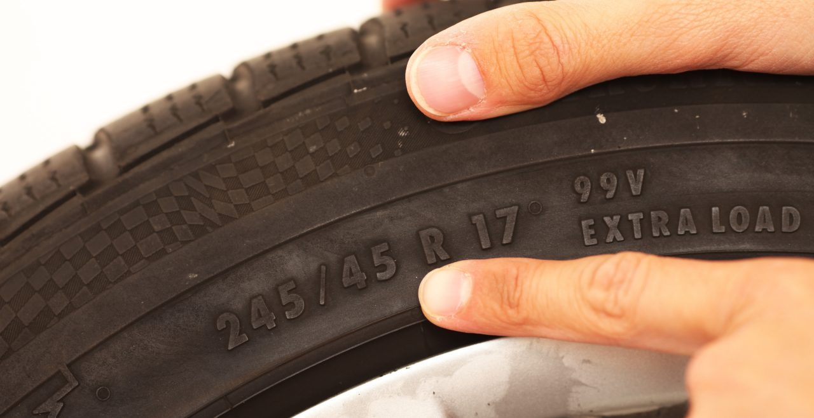
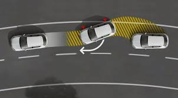
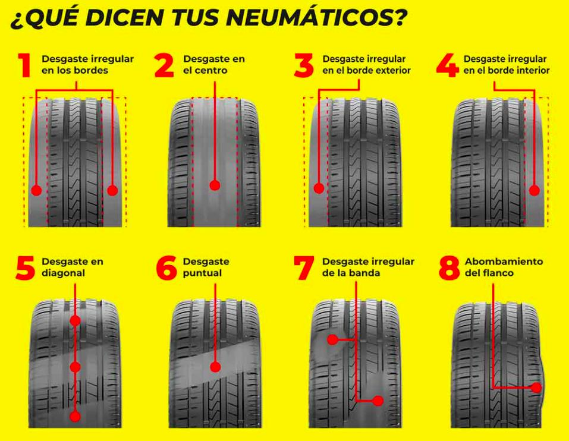

En esta situación de aprendizaje vas a descubrir por qué el neumático es un elemento clave en la seguridad, la transmisión de fuerzas y el frenado del vehículo, y cómo su estado influye directamente en sistemas como ABS, ASR y ESC.
Trabajarás como lo haría una persona técnica en automoción, analizando casos reales, diagnosticando desgastes y elaborando productos digitales profesionales.
OBJETIVOS DE APRENDIZAJE
Al finalizar esta SdA serás capaz de:
Identificar la estructura y funciones del neumático.
Relacionar el estado del neumático con el comportamiento del vehículo en frenada y transmisión.
Interpretar correctamente los marcajes del neumático.
Diagnosticar desgastes anómalos justificando su causa mecánica.
Comunicar información técnica mediante productos digitales.
SESIÓN 1 - El neumático y la seguridad del vehículo (2 horas lectivas)
El neumático es el único punto de contacto entre el vehículo y la calzada. Su estado determina la capacidad de:
Transmitir el par motor
Frenar eficazmente
Mantener la estabilidad
Vídeo recomendado: Seguridad vial: la importancia de los neumáticos. https://youtu.be/3Vz3Rqxj86k?si=xCe-BJSn8meWWp03
¿Por qué un neumático desgastado reduce la eficacia del ABS?
¿Qué ocurre si la adherencia es insuficiente?
El neumático es el único punto de contacto entre el vehículo y la calzada. Su estado determina la capacidad de:
Transmitir el par motor
Frenar eficazmente
Mantener la estabilidad
Vídeo recomendado: Seguridad vial: la importancia de los neumáticos. https://youtu.be/3Vz3Rqxj86k?si=xCe-BJSn8meWWp03
¿Por qué un neumático desgastado reduce la eficacia del ABS?
¿Qué ocurre si la adherencia es insuficiente?
SESIÓN 2 - Construcción y tipos de neumáticos (2 horas lectivas)
Partes del neumático:
- Banda de rodadura
- Flancos
- Carcasa
- Talón
- Cinturones
Tipos:
- Radial
- Runflat
- Invierno / All Season
Actividad práctica: Identificación de las partes del neumático mediante imagen anotada.
Sesión 3 - Marcaje de los neumáticos (2 horas lectivas)

Ejemplo de marcaje:
245/45 R17 99V EXTRA LOAD
Anchura
Perfil
Tipo de construcción
Diámetro de llanta
Índice de carga
Código de velocidad
SESIÓN 4 · El neumático y los sistemas ABS, ASR y ESC (2 horas lectivas)

La electrónica no puede compensar un neumático en mal estado.
El desgaste, la presión o el tipo incorrecto afectan a:
Distancia de frenado
Estabilidad
Control de tracción
¿Puede un ABS funcionar correctamente con neumáticos desgastados
SESIÓN 5 · Desgastes, averías y diagnóstico (2 horas lectivas)

Desgaste central
Desgaste lateral
Escalonado
Actividad diagnóstica (Documento compartido):
Describe el desgaste.
Indica la causa mecánica.
Relaciónalo con transmisión o frenado.
SESIÓN 6 · Producto final 1: Infografía interactiva (2 horas lectivas)
Producto: Infografía digital interactiva
Tema a elegir:
El neumático y la frenada de emergencia
Desgastes del neumático y su causa
Neumáticos y sistemas de seguridad
Herramientas recomendadas:
Canva
Genially
Requisitos:
Lenguaje técnico y visual
Al menos 1 elemento interactivo
Imágenes o esquemas propios o libres
Entrega: TEAMS
Evaluación: rúbrica
Más información sobre este punto en el apartado de actividades dentro del punto material de apoyo.
SESIÓN 7 · Producto final 2 (VIDEO) (2 horas lectivas)
Tema: Desgaste de los neumáticos de cualquier vehículo que tengamos en el taller con una duración no superior a los dos minutos. Relacionar el desgaste con sus causas, grabar con calidad, usar el contenido para el taller y hacer una conclusión final.
Soporte de entrega: TEAMS
Más información sobre este punto en el apartado de actividades dentro del punto material de apoyo.
SESIÓN 8 - Repaso gamificado y cierre (1 hora lectiva)
Juego eXeLearning: Rosco de neumático
Repaso de conceptos clave
Puesta en común final